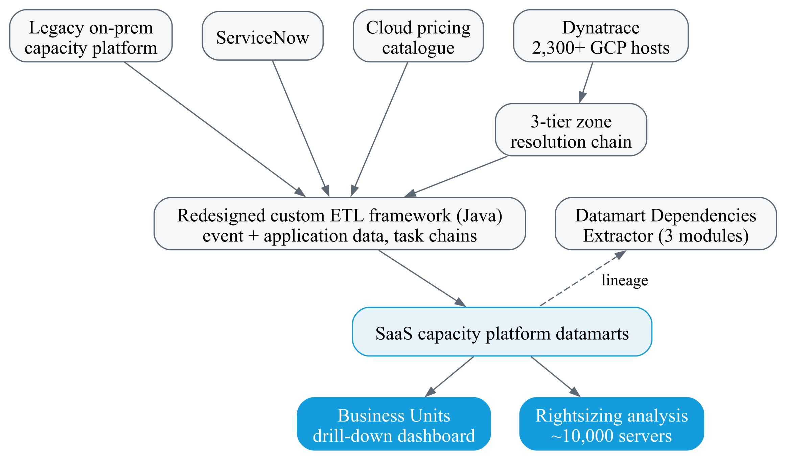
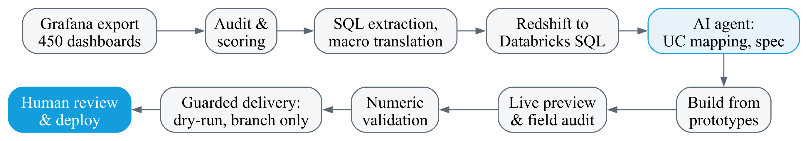
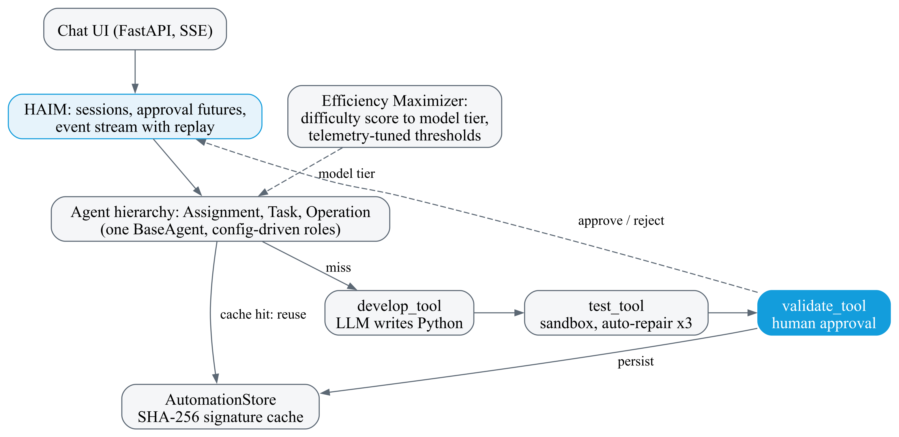

Three systems, start to finish
Client and internal work I delivered at Moviri. The code and client systems are confidential, so clients are anonymized and some figures are rounded; the architecture, engineering decisions, and results are described as built.
Enterprise Capacity Platform Migration and Optimization
Major UK Bank. BMC Helix Continuous Optimization, Java ETL, SQL datamarts, Dynatrace API, ServiceNow, GCP.
The problem
The bank was moving its capacity management from a legacy on-premises platform to a SaaS successor. That meant rebuilding every integration that relied on direct database access, reproducing years of custom transformation logic, and giving the business a view of capacity risk and spend it could act on. Across roughly 10,000 servers, much of the capacity was overprovisioned, and there was no consolidated picture of where.
My role
Senior Consultant, responsible with the solution architect for nine of the migration's eleven workstreams. I built integrations and dashboards, co-authored ~50 of the 74 content pages of the contractual Construction Document, presented delivered work to client stakeholders, and onboarded a new team member.

Engineering highlights
- Capacity analysis and rightsizing. I led capacity analysis across ~10,000 overprovisioned servers and fed rightsizing recommendations into the platform's dashboards, priced against the cloud catalogue with a cost extractor I adapted from another engagement. The rightsizing cut infrastructure spend by $2M+ per month.
- Business Units drill-down dashboard. I built the front and back end. Users start at a platform-wide view and drill through five levels (Business Unit, Platform, Lab, Application, then server, service pool, or database) to the root cause of a risk, with risk projected over 0 to 90, 91 to 180, and 181 to 365 day horizons. It won the Innovation Award at the BMC Helix London Roadshow.
- ETL framework redesign. The migration's largest workstream. Integrations that had read the legacy database directly were rebuilt around buffer tables, with legacy transformation logic replicated as datamart aggregations orchestrated as task chains. I added event and application data support, migrated all ServiceNow integrations, and promoted the ETLs to production.
- Three-tier zone resolution. A per-host lookup for 2,300+ GCP hosts would cost thousands of API calls per run. My chain parses the zone from the hostname first, then builds a map from one bulk request per run, and only then falls back to a cached per-host lookup. API cost scales with unresolved hosts, not fleet size.
- Datamart Dependencies Extractor. Three Java ETL modules resolve dashboard, datamart (memoization, cycle detection), and ETL dependencies into a graph rendered as a node-graph dashboard, for impact analysis, safe cleanup, and dev-to-prod checks. Fully configurable, it ships as reusable company IP.
Outcome
$2M+ per month in savings, an industry award, all ServiceNow integrations and redesigned ETLs in production, reusable company IP, and a co-presented follow-on Phase 1B proposal.
BI Platform Modernization: Grafana to Databricks AI/BI
Major Italian Telecommunications Provider. Python, Databricks AI/BI, Unity Catalog, Lakehouse Federation, Redshift, Grafana, Claude Code.
The problem
The client was moving a ~100 TB analytics platform from AWS (Redshift, dbt, Grafana) to Databricks. The estate held 450 Grafana dashboards and 7,000+ visualizations reading from 840 distinct source tables. My audit scored 74% of the dashboards as needing manual work or redesign, and 44% referenced library panels whose definitions were missing from the export. The target format is undocumented and changes between releases. The fixed timeline required ~20 dashboards (~335 visualizations) per working day, one every ~20 minutes, before verification and rework.
My role
I ran the planning phase independently: ~300 in-scope objects mapped into 71 migration clusters, effort estimates reconciled with the commercial proposal, an AWS cost model ($89K/yr), and the root cause of a permissions blocker affecting 41 of 47 data sources. I then owned the dashboard migration end to end as its sole engineer, including ~10 client review meetings as the main point of contact.

Engineering highlights
- The agent acts at one point; code does the rest. LLMs are good at judgment (mapping tables to Unity Catalog, writing a dashboard spec) and unreliable at repetitive exact work. Everything else runs through 15 deterministic Python tools protected by a 63-test regression suite, and widgets are assembled from prototypes cut from real dashboards, never hand-written JSON.
- Guardrails for writing into another team's repository. Delivery resolves every path against an allow-list, dry-runs first, creates a branch, and stops. A pre-execution hook blocks commits, pushes, production deploys, and credential reads regardless of agent permissions, so every change reaches production through a reviewed diff.
- Importing is not verification. The platform accepts dashboards that do not work, so I made live preview with every filter exercised mandatory, automated it with a live field-audit tool, and validated every dataset numerically against a Grafana baseline. A comparison that returns zero rows counts as a failure, not a match.
- Federated query failure modes. Composite keys or computed columns in a WHERE clause break predicate pushdown, WITH RECURSIVE over a federated table never returns, and some catalog tables are listed but unreadable. Each was diagnosed, documented, and turned into a rewrite rule in the tooling.
- Reverse-engineering the platform. I decoded undocumented AI/BI internals (threshold coloring, per-cell formatting, dynamic titles, sparklines, cascading filters) into reusable build capabilities, so a fix found on one dashboard reached every remaining one. Several improve on the originals.
- AI-assisted engineering at scale. Context curation, a dated decision log of 175+ entries, and regression gates let one engineer sustain enterprise throughput: 100+ dashboards in the first two weeks.
Outcome
All 450 dashboards migrated on the fixed timeline: every one numerically validated, approved by the client, and deployed to production, including 150+ the client modified mid-migration. I also wrote the handover, runbook, and a plain-language design-rationale guide for client stakeholders.
HOAO: Human-Oriented Automation Orchestration
Moviri AI Labs. Python, Google ADK, Gemini, FastAPI, Server-Sent Events, pytest, Docker, Google Cloud Run.
The problem
Internal automation requests were each built as one-off scripts. A generic LLM agent can attempt such tasks, but its work is not reusable, auditable, or cost-controlled. The goal was a framework in which agents turn a task into a tested, human-approved tool, so the second time a task arrives it is a cache hit rather than another generation.
My role
I designed, built, and deployed the framework alone across six iterations, ending in HOAO, which merges a hierarchical agent design with a self-generating tool loop. It runs as a single container on Google Cloud Run with identity-aware authentication and GitHub Actions CI, and the same stack powers an LLM onboarding agent I built for HR.

Engineering highlights
- One agent class, configuration-driven roles. Three near-identical agent classes collapsed into one BaseAgent parameterized by role, with behavior loaded from rule files. A new kind of agent is a text file, not a subclass.
- Human-in-the-loop tool generation. An LLM writes a Python tool; it runs in a sandbox, with errors sent back for repair up to three times; then the pipeline suspends on an asynchronous future until a person approves, rejects, or edits it. No generated code runs on real input without approval.
- Reuse through a signature cache. Approved tools persist under a SHA-256 signature of the normalized task, with atomic writes; tools are shared across sessions while conversation state stays isolated.
- Cost-aware model routing. Every LLM call is logged. A difficulty estimator routes each task to a cheap, mid, or premium Gemini tier, and a tuner shifts the boundaries from observed success rates, with a telemetry dashboard over all of it.
- A single bridge between people and agents. The interaction manager owns sessions, pending approvals, and a Server-Sent Events stream with backlog replay, so reconnecting clients see the full trace.
Outcome
A complete, documented, deployed framework with a thorough test suite. It reflects how I approach AI work generally: let models handle judgment, keep execution deterministic and tested, and put a human approval wherever generated work becomes real.